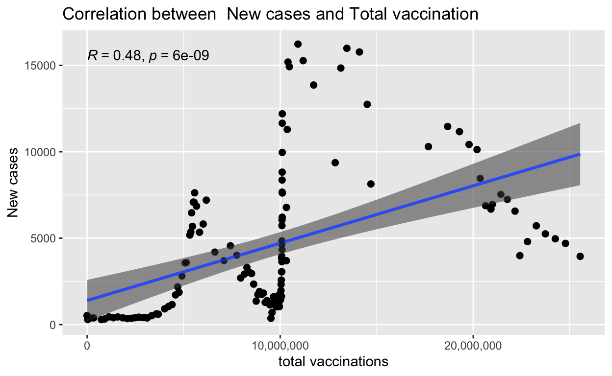

Introduction
A dangerous, life-threatening virus named COVID-19 started spreading in December 2019 enters Bangladesh on 08th March 2020. From various news and information, it is clear that COVID-19 enters Bangladesh from tourists from various countries and immigrants who lived in other countries to do their jobs.
The transmission rate of COVID-19 then started increasing day by day and its repercussion had to face many unexpected circumstances in various sectors like economic, educational, industrial, political and regular life of citizens. This weblog focuses on understanding Correlation between New cases and Total vaccination in Bangladesh.

Variable description
The data-set is an R Built-in Data set which is being used for constructing this analysis. It is a very large data set name “covid_data” providing all countries information out of which Bangladesh was filtered.
There are total 545 observations and 62 columns in the data set consists of years 2020 and 2021. Out of these 62 variables “Total cases”, “Total deaths”, “Total tests”, “Total vaccinations”, “Year”, “Month”, “New cases” were use to show the analysis.
Descriptive Summary Statistics
- All the variables in the table above show a very high “mean” and “standard deviation”. Higher the mean explains that there is too much of variation and high sd indicates that the data are spread out over a large range of values. (This result has been obtained after removing the NA values)
Analysis:
It shows a linear relation between Total tests and Total recovery for the years 2020 and 2021. Recovery has been derived from taking out the difference between total cases and total deaths
Comparing the years 2020 and 2021, it has been observed that for the year 2020 initially the new cases were low and recovery count is fairly good. But for the year 2021 increase in the no. of cases recovery was also quite high.
Correlation between New cases and Total vaccination
| Variables | new_cases | total_vaccinations |
|---|---|---|
| new_cases | 1.00 | 0.48 |
| total_vaccinations | 0.48 | 1.00 |
The table above shows a stochastic version of whether there is any correlation between Total tests, New cases, Total vaccination, and Recovery for the year 2021
The correlation coefficient is a statistical measure of the strength of the relationship between the relative movements of variables. The values range between -1.0 and 1.0.
It is clearly seen that the correlation coefficient is +0.48 which is lying between ± 0.30 and ± 0.49 and is considered having a medium correlation.
Showing a medium positive correlation where as no. of vaccination increases there is a fall in the no. of new cases
A graphical representation of the above table for a detailed story

It is quite fascinating to see that these two variables, total vaccinations and new cases share a positive medium correlation relation.
By looking at the initial stage we see that even though vaccination drive had begun, the cases were increasing which means the impact of vaccination on the population was not that effective. In fact, when the vaccination count reached 1 core population the COVID cases were at peak.
But, surprisingly after the vaccination count crossed 1 core the cases started to decrease as seen in the graph above showing positive relation which explains as the No. of vaccinations increased the new cases started to fall.
Which mean vaccination has a positive impact on the new COVID cases, showing Bangladesh is currently moving to a safe zone.
Conclusion
The Pandemic of COVID-19 has hampered in Bangladesh. Hence it has been clear from the analysis that Vaccination roll out has show a positive impact slowly bringing the country back to normal and decreasing the count of new cases.
References
[1] saifuzzaman, M. and Rahman, m., 2021. COVID-19 and Bangladesh: Situation report, comparative analysis, and case study. ScienceDirect.